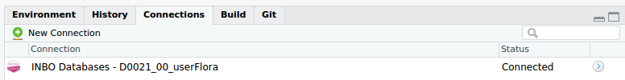

Read data from INBO databases (SQL Server) with R
Database access using R
Connection to INBO database
Here we provide the approach using the package DBI, which is also used by RStudio.[1]. This package enables the link between R and the (remote) database. After installation of the needed packages (install.packages(c("DBI", "glue", "tidyverse"))), the packages can be loaded:
library(DBI)
library(glue)
library(tidyverse)
To create a database connection, different approaches are available as explained in the next section:
- Use the dedicated
connect_inbo_dbasefunction in the inborutils package - Setup the required parameters yourself
- Reuse existing registered connections on your computer
Inborutils function
To support the connection to INBO databases, a dedicated function is available in the inborutils package, called connect_inbo_dbase. The function provides support to connect to INBO databases and uses the Connections pane in the Rstudio interface:

To use the connect_inbo_dbase function, make sure to install the inborutils package, following the installation instructions. After a successfull installation, load the library and create a database connection:
library(inborutils)
my_connection <- connect_inbo_dbase("D0021_00_userFlora")
Once the connection is successfully established, the database can be queried.
Remark for Linux users: When working in Linux, this setup (using Trusted connection) requires an active kerberos session. More information about the setup and functionality is to be found in the tutorial on kerberos installation.
Setting up the connection yourself
In case you want to setup the connection yourself (e.g. errors using inborutils), you can do so by providing the necessary parameters:
my_connection <- DBI::dbConnect(odbc::odbc(),
driver = "SQL Server",
server = "inbo-sql07-prd.inbo.be", # or inbo-sql08-prd.inbo.be
port = 1433,
database = "D0021_00_userFlora", # or your database of interest
trusted_connection = "Yes")
The most important parameters are server and database, the others should normally be kept as such. For the first one, remember that database names starting with M, S or W can be accessed using the inbo-sql08-prd.inbo.be server and others (mostly with D) use the inbo-sql07-prd.inbo.be server. The database name is the name of the database (if you can't remember the name, connect with a database you do know, e.g. D0021_00_userFlora and you'll see an overview of the existing databases on that server after connecting.)
Use existing MSAccess connection name
When you query data from a SQL database that is already accessible using MSAccess, such a database is also accessible from R. For Windows users, the most important element is to know the so-called DSN (i.e. a registered Data Source Name). Actually, it is just the name of the database as it is known by your computer (and MS Access). The easiest way to check the DSN is to check the registered ODBC connections in the administrator tools menu.
For Dutch-speaking Windows 7 users:
> Kies in het Configuratiescherm van Windows de optie Systeembeheer > Gegevensbronnen (ODBC). De optie Systeembeheer verschijnt in de categorie Systeem en onderhoud.
You should see a list similar to the list underneath, with the names of the available DSN names enlisted:

An alternative way to check the DSN name of a database already working on with Access, is to check the DSN inside MS Access (in dutch, check menu item Koppelingsbeheer):

For example, the DSN name UserFlora or Cydonia-prd can be used to query these databases and extract data from it with similar queries to the one used in MSAccess. First of all, the connection with the database need to be established, by using the odbcConnect function, providing the DSN name as argument:
For Windows users:
my_connection <- odbcConnect("UserFlora")
Once the connection is successfully established, the database can be queried.
Get a complete table from the database
The function dbReadTable can be used to load an entire table from a database. For example, to extract the tblTaxon table from the flora database:
rel_taxa <- dbReadTable(my_connection, "relTaxonTaxonGroep")
head(rel_taxa) %>% knitr::kable()
| ID | TaxonGroepID | TaxonID |
|---|---|---|
| 1 | 4 | 1 |
| 2 | 4 | 2 |
| 3 | 4 | 3 |
| 4 | 4 | 4 |
| 5 | 4 | 5 |
| 6 | 4 | 6 |
The connection my_connection, made earlier, is used as the first argument. The table name is the second argument.
Remark: If you have no idea about the size of the table you're trying to load from the database, this could be rather tricky and cumbersome. Hence, it is probably better to only extract a portion of the table using a query.
Execute a query to the database
The function dbGetQuery provides more flexibilty as it can be used to try any SQL-query on the database. A complete introduction to the SQL language is out of scope here. We will focus on the application and the reusage of a query.
meting <- dbGetQuery(my_connection, paste("SELECT TOP 10 * FROM dbo.tblMeting",
"WHERE COR_X IS NOT NULL"))
head(meting) %>% knitr::kable()
| ID | WaarnemingID | TaxonID | MetingStatusCode | Cor_X | Cor_Y | CommentaarTaxon | CommentaarHabitat | CREATION_DATE | CREATION_USER | UPDATE_DATE | UPDATE_USER |
|---|---|---|---|---|---|---|---|---|---|---|---|
| 2 | 21748 | 3909 | GDGA | 109948 | 185379 | NA | NA | NA | NA | NA | NA |
| 14 | 45523 | 3909 | GDGA | 127708 | 179454 | NA | NA | NA | NA | NA | NA |
| 15 | 124394 | 3909 | GDGA | 109424 | 192152 | NA | NA | NA | NA | NA | NA |
| 23 | 38561 | 3909 | GDGA | 128290 | 179297 | NA | NA | NA | NA | NA | NA |
| 24 | 126500 | 3909 | GDGA | 98714 | 178373 | NA | NA | NA | NA | NA | NA |
| 173 | 73725 | 3909 | GDGA | 102612 | 189891 | NA | NA | NA | NA | NA | NA |
Create and use query templates
When you regularly use similar queries, with some minimal alterations, you do not want to copy/paste each time the entire query. It is prone to errors and you're script will become verbose. It is advisable to create query templates, that can be used within the dbGetQuery function.
Consider the execution of the following query. We are interested in those records with valid X and Y coordinates for the measurement, based on a given dutch name:
subset_meting <- dbGetQuery(my_connection,
"SELECT meet.COR_X
, meet.Cor_Y
, meet.MetingStatusCode
, tax.NaamNederlands
, tax.NaamWetenschappelijk
, waar.IFBLHokID
FROM tblMeting AS meet
LEFT JOIN tblTaxon AS tax ON tax.ID = meet.TaxonID
LEFT JOIN tblWaarneming AS waar ON waar.ID = meet.WaarnemingID
WHERE meet.Cor_X IS NOT NULL
AND meet.Cor_X != 0
AND tax.NaamNederlands LIKE 'Wilde hyacint'")
head(subset_meting) %>% knitr::kable()
| COR_X | Cor_Y | MetingStatusCode | NaamNederlands | NaamWetenschappelijk | IFBLHokID |
|---|---|---|---|---|---|
| 88720 | 208327 | GDGA | Wilde hyacint | Hyacinthoides non-scripta (L.) Chouard ex Rothm. | 11195 |
| 103111 | 190915 | GDGA | Wilde hyacint | Hyacinthoides non-scripta (L.) Chouard ex Rothm. | 6990 |
| 24106 | 199925 | GDGA | Wilde hyacint | Hyacinthoides non-scripta (L.) Chouard ex Rothm. | 9601 |
| 77618 | 175718 | GDGK | Wilde hyacint | Hyacinthoides non-scripta (L.) Chouard ex Rothm. | 4043 |
| 68959 | 173070 | GDGK | Wilde hyacint | Hyacinthoides non-scripta (L.) Chouard ex Rothm. | 3197 |
| 105765 | 180785 | GDGA | Wilde hyacint | Hyacinthoides non-scripta (L.) Chouard ex Rothm. | 4830 |
If we need this query regularly, but each time using a different tax.NaamNederlands (only the name changes), it is worthwhile to invest some time in the creation of a small custom function that uses this query as a template. Let's create a function flora_records_on_dutch_name that takes a valid database connection and a given Dutch name and returns the relevant subset of the data for this query:
flora_records_on_dutch_name <- function(dbase_connection, dutch_name) {
dbGetQuery(dbase_connection, glue_sql(
"SELECT meet.Cor_X
, meet.COr_Y
, meet.MetingStatusCode
, tax.NaamNederlands
, tax.NaamWetenschappelijk
, waar.IFBLHokID
FROM dbo.tblMeting meet
LEFT JOIN dbo.tblTaxon AS tax ON tax.ID = meet.TaxonID
LEFT JOIN dbo.tblWaarneming AS waar ON waar.ID = meet.WaarnemingID
WHERE meet.Cor_X IS NOT NULL
AND meet.Cor_X != 0
AND tax.NaamNederlands LIKE {dutch_name}",
dutch_name = dutch_name,
.con = dbase_connection))
}
Hence, instead of copy-pasting the whole query each time (which could be error-prone), we can reuse the function for different names:
hyacint <- flora_records_on_dutch_name(my_connection, "Wilde hyacint")
head(hyacint) %>% knitr::kable()
| Cor_X | COr_Y | MetingStatusCode | NaamNederlands | NaamWetenschappelijk | IFBLHokID |
|---|---|---|---|---|---|
| 24106 | 199925 | GDGA | Wilde hyacint | Hyacinthoides non-scripta (L.) Chouard ex Rothm. | 9601 |
| 103111 | 190915 | GDGA | Wilde hyacint | Hyacinthoides non-scripta (L.) Chouard ex Rothm. | 6990 |
| 88720 | 208327 | GDGA | Wilde hyacint | Hyacinthoides non-scripta (L.) Chouard ex Rothm. | 11195 |
| 68959 | 173070 | GDGK | Wilde hyacint | Hyacinthoides non-scripta (L.) Chouard ex Rothm. | 3197 |
| 118123 | 183942 | GDGA | Wilde hyacint | Hyacinthoides non-scripta (L.) Chouard ex Rothm. | 5672 |
| 106107 | 182343 | GDGA | Wilde hyacint | Hyacinthoides non-scripta (L.) Chouard ex Rothm. | 5217 |
bosanemoon <- flora_records_on_dutch_name(my_connection, "Bosanemoon")
head(bosanemoon) %>% knitr::kable()
| Cor_X | COr_Y | MetingStatusCode | NaamNederlands | NaamWetenschappelijk | IFBLHokID |
|---|---|---|---|---|---|
| 72921 | 198828 | GDGA | Bosanemoon | Anemone nemorosa L. | 8824 |
| 72874 | 198735 | GDGA | Bosanemoon | Anemone nemorosa L. | 8824 |
| 72887 | 198660 | GDGA | Bosanemoon | Anemone nemorosa L. | 8824 |
| 72451 | 199639 | GDGA | Bosanemoon | Anemone nemorosa L. | 9423 |
| 196274 | 178260 | GDGA | Bosanemoon | Anemone nemorosa L. | 4219 |
| 118355 | 185697 | GDGA | Bosanemoon | Anemone nemorosa L. | 5670 |
Remark: Do not forget to close your connection when finished.
dbDisconnect(my_connection)
The glue_sql function
In order to accomplish the re-usage of a query for different input names (dutch_name), the glue_sql function is used from the glue package. The glue_sql function (and the more general glue function) provides the ability to combine text and variable values in a single charactor string (i.e. the query to execute). For each variable name required in the query (any part of your query you want to have interchangeable), a representation in the query is given by the variable name you use in R, put in between curly brackets. For example, if you have the dutch_name variable in R, you can use it inside the query as {dutch_name}:
dutch_name <- 'Jan'
an_integer <- 3
a_float <- 2.8
glue('This prints a combination of a name: {dutch_name}, an integer: {an_integer} and a float value: {a_float}')
## This prints a combination of a name: Jan, an integer: 3 and a float value: 2.8
Whereas the glue function is a general function for strings, the glue_sql function is specifically created to setup queries to databases. More information is provided here and here.
[1] Formerly, connections were made using the package RODBC